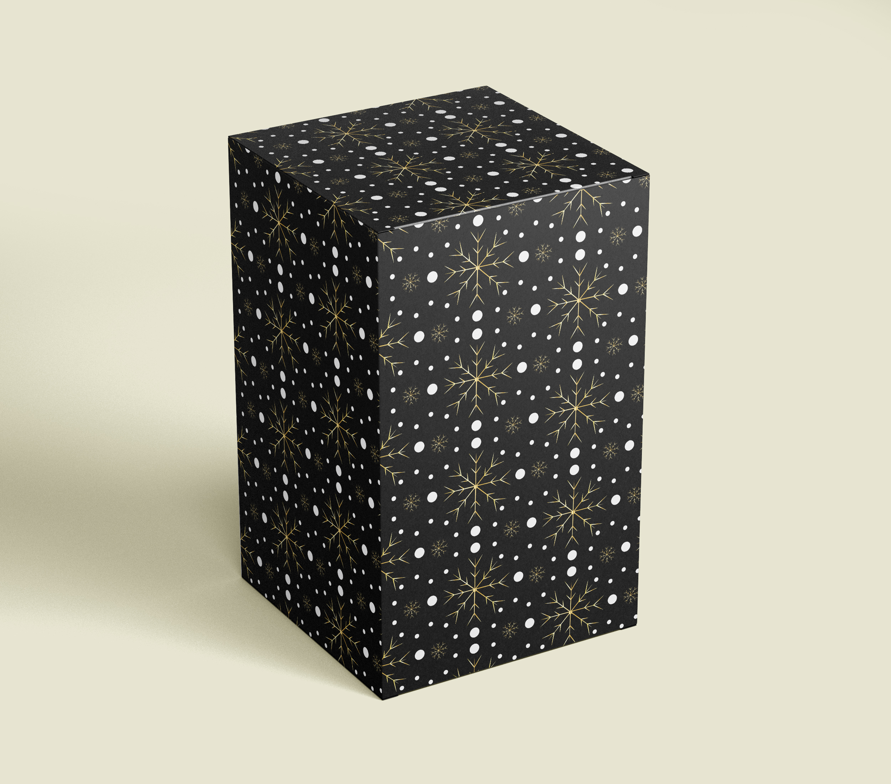
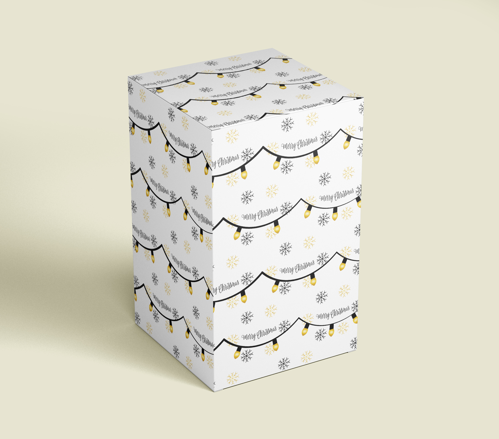

Wrapping Paper

This wrapping paper project was a design contest from Premier Press where we had to utilize the colors of white, black, and gold due to that being their 50th year anniversary. This contest is for students specifically and they wanted it to be holiday or winter themed which is why I went for snowflakes and Christmas lights in my design.

